Continents and Oceans
Continents and Oceans
61
61
Man’s sea voyages in search of the unknown world, for wealth,
and to satisfy curiosity have a long history. Where could these
explorers have reached in search of a new world? Some of
them have gone around the world travelling exclusively along
sea routes.
Is it possible to go around the world along a land route? Find
this out from the globe in your Social Science lab.
Fig. 6.1
Page 61
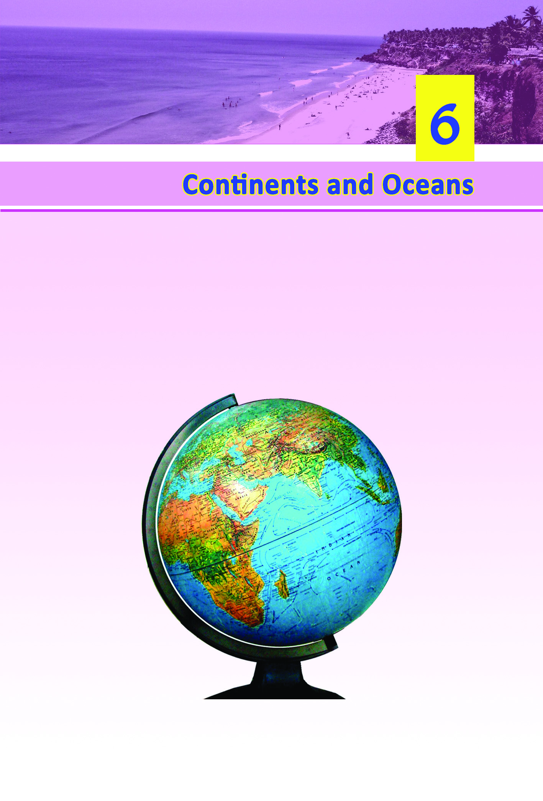
Page 62
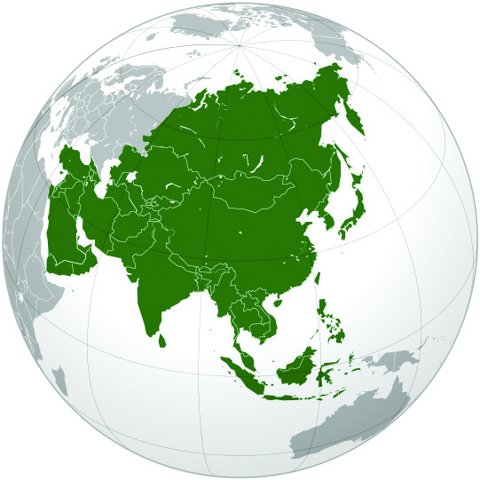
62
62
Social Science V
Social Science V
Asia
Asia
Try to answer the following questions by observing the world
map in the Social Science lab.
•
Which colour represents the major part of the map?
•
What does this colour indicate?
These vast waterbodies are called oceans. About two third
of the earth’s surface is covered by oceans.
The other areas represented in different colours signify land.
Continents are vast land masses, located in between the oceans.
Identify the continents from the globe?
• Asia
• Antarctica
• Africa
• Europe
• North America
• Australia
• South America
Let us examine the features of the continents one by one.
Asia
•
Asia is the largest
continent.
•
It is located to the north
of the Indian Ocean.
•
It is the world’s most
populated continent.
Zzo]p-Iƒ
Page 63
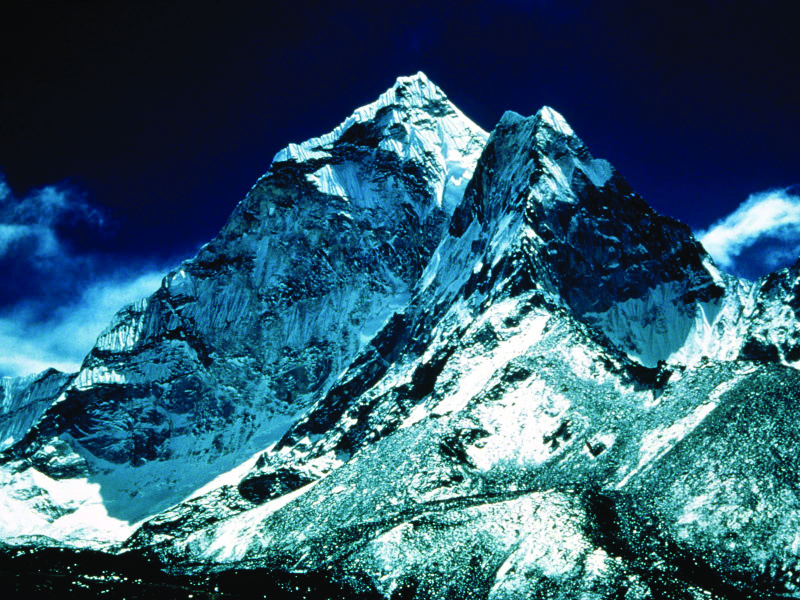
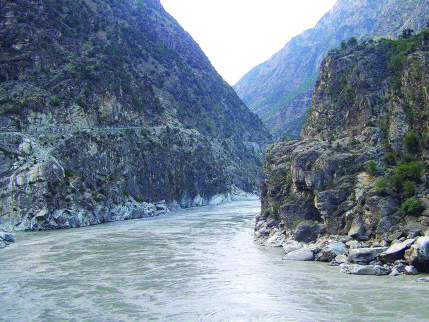
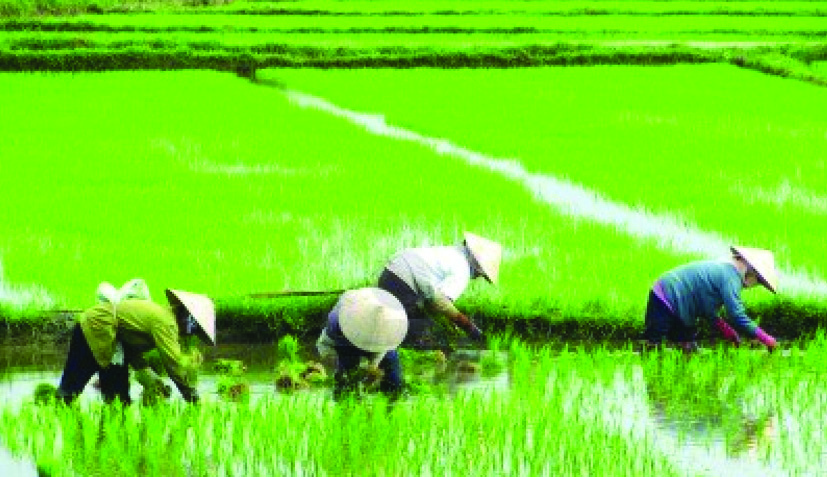
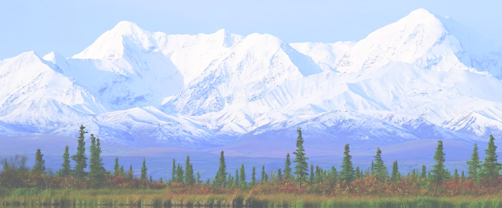

Continents and Oceans
Continents and Oceans
63
63
•
India is part of this continent.
•
Mount Everest, the highest
peak in the world, is situated
here.
•
The continent has regions that
enjoy diverse climatic features
like heavy rainfall, low rainfall,
snowfall, extreme heat, moderate heat and cold.
Mount Everest
The Indus River
Paddy cultivation in China
•
Crops like paddy, wheat and maize are cultivated in this
continent.
•
Asia is the largest producer of paddy in the world.
The Lofty Himalayas
The Himalayas are the world’s highest mountain range. Located
to the north of India in the continent of Asia, it greatly influences
the climate and the culture of India. This mountain range acquired
the name 'Himalaya' from its several permanently snow-covered
peaks including the Mount Everest in Nepal, which is the highest
peak in the world.
Page 64
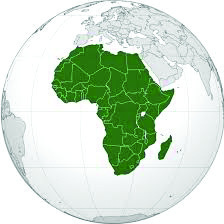
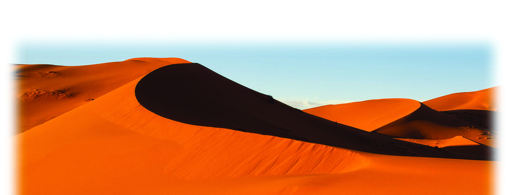
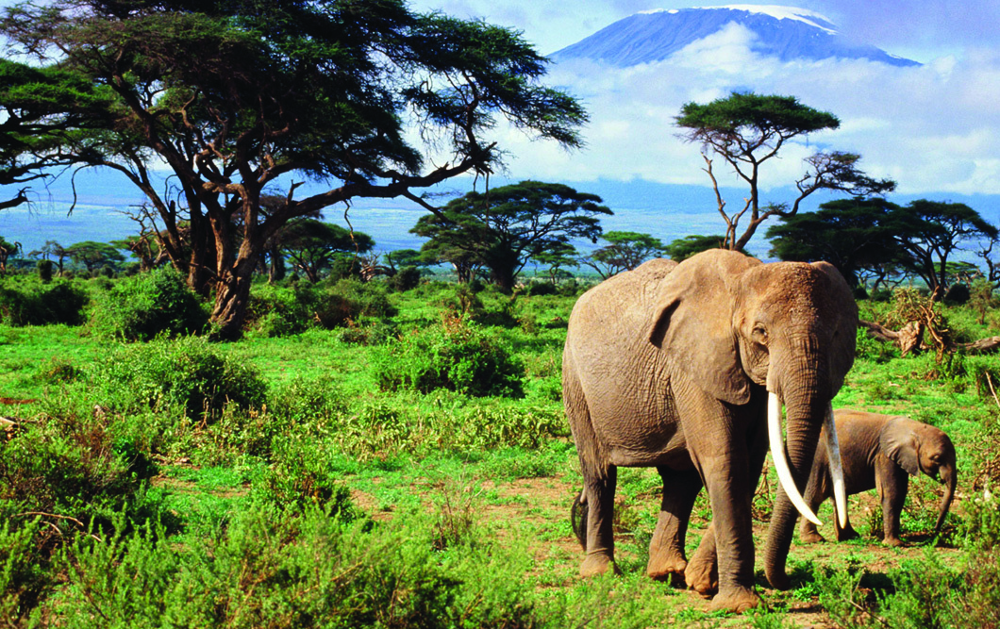
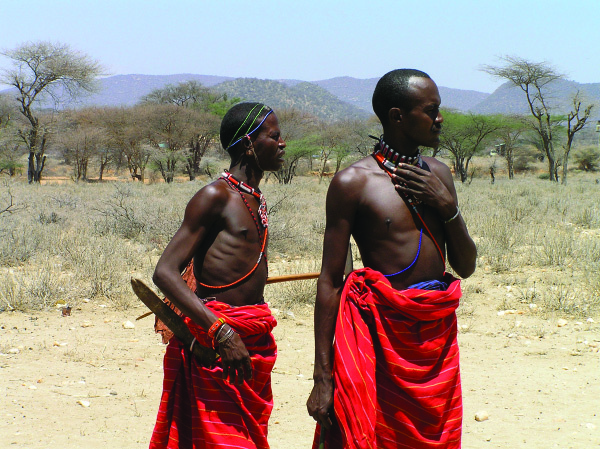
64
64
Social Science V
Social Science V
Africa
Africa
Collect the pictures of the important plants and animals in
Asia from the internet. These can be kept in a separate folder
on the computer in your Social Science lab.
Africa
•
Africa is the second
largest continent.
•
It is located between
the Indian Ocean
and the Atlantic
Ocean.
•
It stands second in
population.
•
Most of the regions
are deserts. Hence
agriculture is sparse.
The Sahara Desert
African elephant
African tribals
•
The Sahara, the world’s largest desert, is located here.
•
The Nile, the world’s longest river, flows through this
continent.
Page 65
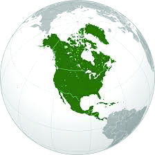
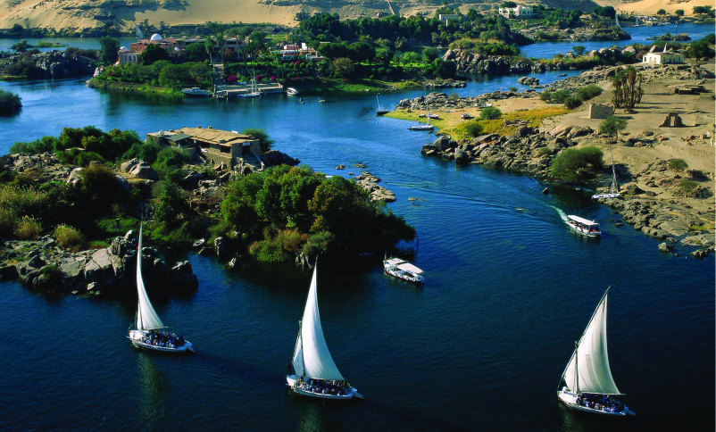

Continents and Oceans
Continents and Oceans
65
65
North America
North America
•
Dense forests with the
world’s richest animal
diversity exist in this
continent.
Collect the pictures of the
important plants and
animals in Africa from the
Internet. These can be kept
in a separate folder on the
computer in your social
science lab.
North America
•
It is located between
the Pacific Ocean and
the Atlantic Ocean.
•
It stands third in size.
•
Mount Mckinley in the
Alaska
Mountain
Range is the highest
peak.
•
The five great lakes
which together hold
21% of the world’s
available fresh water
are located here.
•
The Inuits (Eskimos)
living in snow-covered
regions are a special
feature of this continent.
The Nile
The Nile coursing through
North-East Africa is the
longest river in the world. It
has an approximate length of
6850 km and is known as an
international river because it
flows through 11 countries.
The Nile is usually described
as the life blood of nations like
Egypt and Sudan.
Page 66

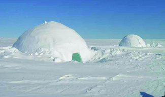
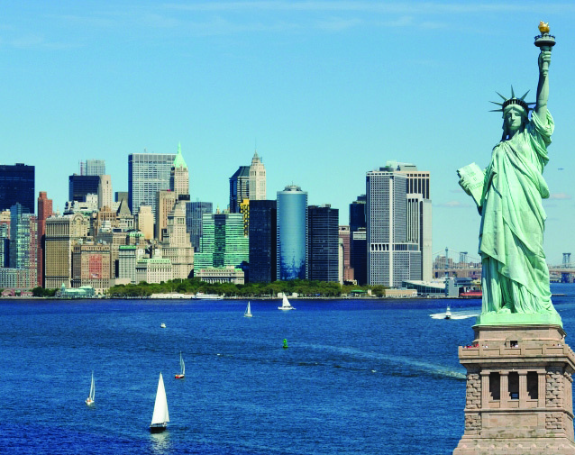
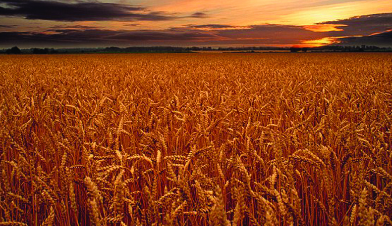
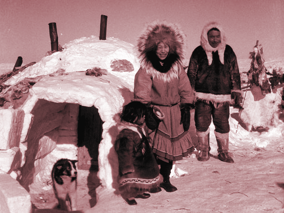
66
66
Social Science V
Social Science V
•
The climate and soil are
suitable for agriculture.
•
It is the world’s largest
producer of wheat.
Collect the pictures of animals
and plants in North America
from the internet. Save them in
a separate folder on the
computer in your Social Science lab.
Ice Homes
The Inuits (Eskimos) living in the
frozen regions of the North Pole,
make temporary houses with
blocks of ice. These are known as
‘igloos’.
The Five Great
Lakes
The
lakes
Superior,
Michigan, Huron, Erie, and
Ontario located in Canada
and the United States of
America are collectively
known as the five great
lakes of North America.
New York
Wheat fields in North America
Inuits (Eskimos)
Page 67
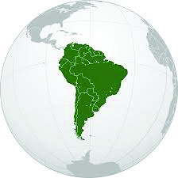
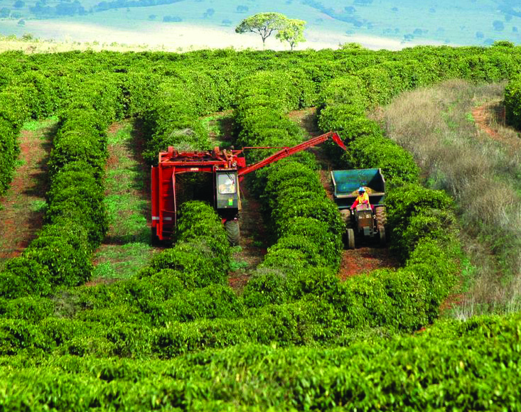
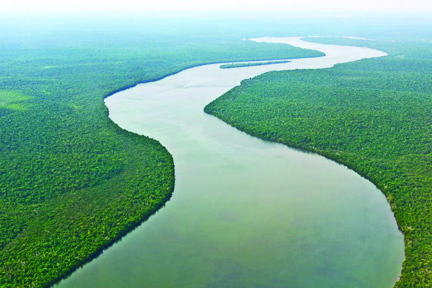
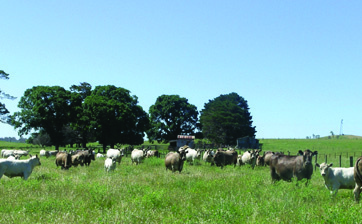
Continents and Oceans
Continents and Oceans
67
67
South America
South America
South America
•
It is located between the
Pacific Ocean and the
Atlantic Ocean.
•
It stands fourth in size.
•
Mount Aconcagua is the
highest peak.
•
River Amazon with the
largest share of fresh water,
flows through this continent.
•
The dense forests of the
Amazon river basin situated
to the north of South
America are rich in diverse
plant and animal life.
•
Cattle
rearing
is
an
important occupation of the
people.
Coffee plantation in Brazil
The Amazon River
Commercial cattle rearing
Page 68

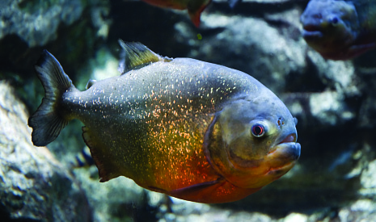
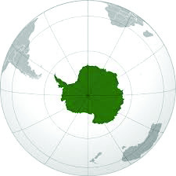
68
68
Social Science V
Social Science V
Don’t Step into the River!
Piranha is a type of fish found in the
river Amazon. They have extremely
sharp teeth with which they ferociously
attack other fishes and animals, and
finish them off within seconds!
Tapioca is a Foreigner
Tapioca, the favourite food of Keralites,
originated in South America. Many of
our agricultural crops have come from
South America.
Collect the pictures of the important animals and plants of
South America from the internet and save them in a separate
folder on the computer in your Social Science lab.
Antarctica
•
Antarctica stands fifth in size.
•
It is the coldest
region
of
the
world.
•
It is known as 'the
White Continent'
since it is covered
with
snow
throughout
the
year.
Antarctica
Antarctica
Page 69
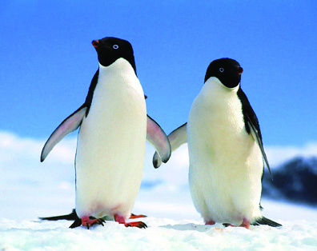
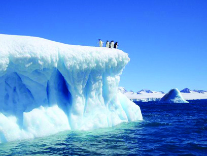
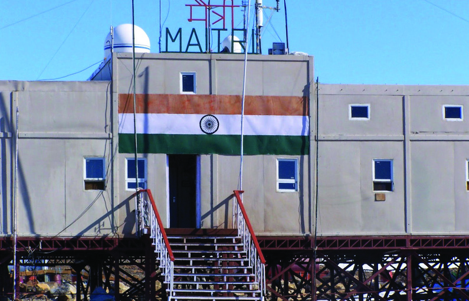
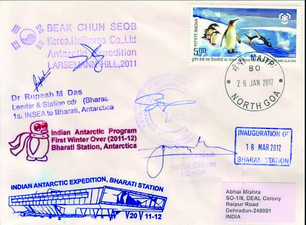
Continents and Oceans
Continents and Oceans
69
69
•
There is no permanent
human settlement.
•
Many countries have set up
research centres for climate
studies
and
mineral
explorations in this mineral-
rich continent.
Collect the pictures of animals in Antarctica from the Internet
and save them in a separate folder on the computer in your
Social Science lab.
Europe
•
It is located between the Atlantic Ocean and Asia.
Penguins of Antarctica
Icebergs
Maitri - The Indian Research Centre
•
Maitri and Bharathi are the Indian research centres in
Antarctica.
Dakshin Gangotri P.O.
India opened a post office in 1983 at
its first Antarctic Research Centre
named Dakshin Gangotri. Nearly 2000
letters were mailed from there!
Page 70
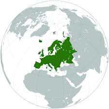
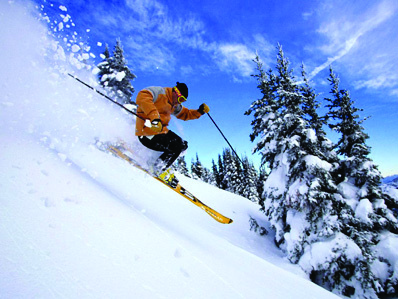
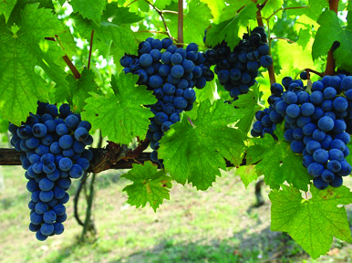
70
70
Social Science V
Social Science V
•
It stands sixth in size.
•
The Ural mountain range
seperates it from Asia.
•
It is the third most
populated continent.
•
Though Southern Europe
enjoys moderate heat and
cold, the northern part
experiences severe cold.
•
It
is
industrially
developed.
•
Fishing is an important occupation.
Europe
Europe
Skiing
Grape cultivation
London
Collect the pictures of plants and animals of Europe from the
Internet and save them in a separate folder on the computer
in your Social Science lab.
Page 71

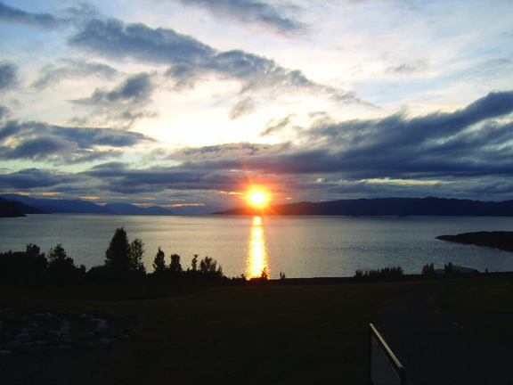
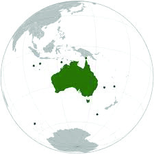
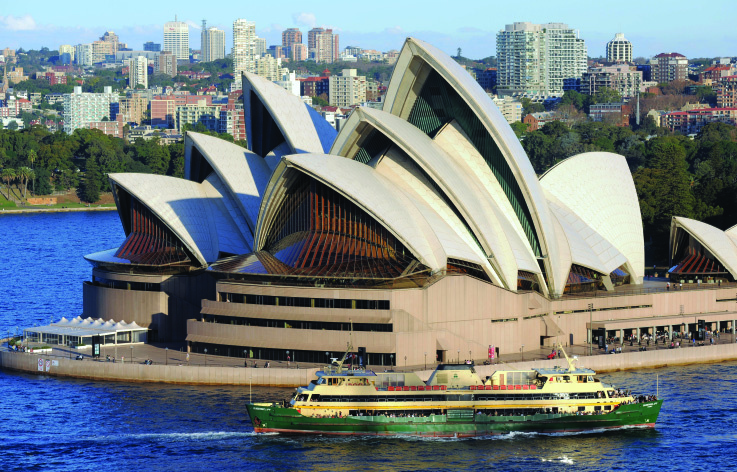
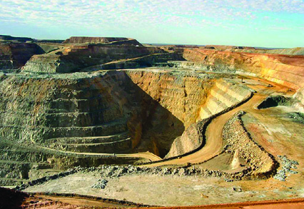
Continents and Oceans
Continents and Oceans
71
71
Norway - The Land of the Midnight Sun
Countries like Norway and Finland,
falling within the Arctic circle (66½°N),
experience six months of night and six
months of day every year. To know more
about these places read ‘Pathira Sooryante
Nattil’ by S. K. Pottekkatt.
Australia
•
It is the smallest
continent.
•
Australia along with
a few surrounding
islands is known as
Oceania.
•
It is referred to as 'the
Island Continent' as it
is surrounded by
Ocean.
•
Platypus (the egg
laying mammal), kangaroo (the animal with a pouch),
Dingo (belonging to the dog family), etc. are found
exclusively in Australia.
Australia
Australia
Sydney
Kalgoorlie goldmine
Page 72

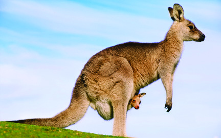
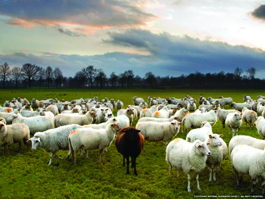
72
72
Social Science V
Social Science V
•
Wheat
is
cultivated
extensively.
•
Minerals like gold, iron ore
and uranium are heavily
mined here.
•
It is famous for sheep
rearing.
Islands refer to land that are
completely surrounded by
water. The Greenland, located
to the north of the Atlantic
Ocean, is the world’s largest
island.
Islands
The Baby in the Skin Pouch
A skin pouch on the belly outside the body; a baby inside that
pouch. Do you recognise the animal? It is the kangaroo, commonly
found in Australia. It can hop fast using its hind legs and tail.
Collect the pictures of the important animals and plants in
Australia from the Internet
and save them in a
separate folder on the
computer in your Social
Science lab.
Prepare a list of the
information
gathered
about the continents. You
can also use an atlas.
Cattle rearing in Newzealand
Page 73

Continents and Oceans
Continents and Oceans
73
73
Copy this on to a chart paper and display it in the class or in
the Social Science lab. (Please remember that all the columns
are not applicable to all continents).
Prepare a digital album with the pictures collected in
connection with different continents.
You are now familiar with the seven continents of the world.
Haven’t you noticed the vast oceans in between these
continents?
Can you name these oceans? You may refer to a world map.
Write them down.
•
The Pacific Ocean
•
•
•
•
Oceans are interconnected. You can identify this with
the help of a globe or softwares like the Sunclock and
the Marble. These interconnected oceans are together known
as the 'World Ocean'.
(Not to Scale)
Continents in Decreasing
Order of Size
Major
Mountains
Major
Rivers
Other
Peculiarities
Deserts
Sea
Seas are the parts of oceans
partially surrounded by land.
Page 74
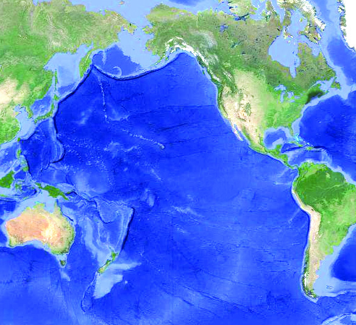

74
74
Social Science V
Social Science V
Let us learn about each ocean.
The Pacific Ocean
The Pacific Ocean is the largest ocean (Fig 6.2). It has the largest
number of islands. 'The
Challenger Deep' in the
Pacific Ocean is the
world’s deepest point.
The Pacific Ocean is the
world’s largest fishing
ground and is rich in
minerals.
Fig : 6.2 The Pacific Ocean
Asia
Asia
North America
North America
South America
South America
Australia
Australia
The Arctic Ocean
The Arctic Ocean
The Pacific Ocean
The Pacific Ocean
(Not to Scale)
The Size of the Pacific Ocean
The Pacific Ocean along with its
associated seas, covers one third of the
earth’s total area. It is more than the
total size of all the continents put
together.
Page 75
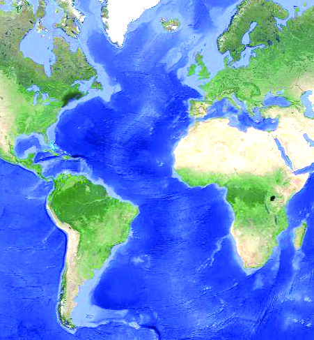
Continents and Oceans
Continents and Oceans
75
75
Observe Fig 6.2 and list out the continents bordering the Pacific
Ocean.
The Atlantic Ocean
The Atlantic Ocean is the second largest ocean. 'The Grand
Banks' which is an important fishing ground is in this ocean.
The northern part of this ocean is the world's busiest ocean
route.
Fig : 6.3 The Atlantic Ocean
South America
South America
Africa
Africa
North America
North America
Europe
Europe
The Atlantic Ocean
The Atlantic Ocean
(Not to Scale)
Observe Fig 6.3 and note down the continents bordering the
Atlantic Ocean.
Page 76
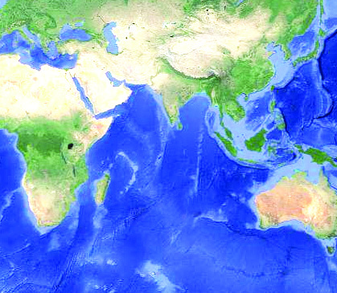

76
76
Social Science V
Social Science V
The Indian Ocean
Observe Fig 6.4. Third in size, this ocean has the distinction of
being an ocean named after a country. The Arabian Sea and
the Bay of Bengal are parts of the Indian Ocean.
Identify the continent situated to the north of the Indian Ocean
from Figure 6.4.
Fig. 6.4. The Indian Ocean
Asia
Asia
Africa
Africa
The Indian Ocean
The Indian Ocean
Australia
Australia
(Not to Scale)
The Coral Reefs
The coral reefs are an important feature of the Indian Ocean.
Corals are formed by the accumulation of calcium compounds
secreted by tiny marine organisms called coral polyps found in
tropical oceans. Lakshadweep islands are formed of these
accumulated coral polyps.
Page 77
Continents and Oceans
Continents and Oceans
77
77
Observe Fig. 6.4 and list out the continents bordering the Indian
Ocean.
The Antarctic Ocean
The ocean bordering Antarctica is known as the Antarctic
Ocean. Since the region experiences severe cold, the surface
of this ocean is almost entirely frozen. It is believed that the
ocean bed is rich in minerals. Many varieties of fish are also
present in this ocean.
The Arctic Ocean
The ocean that encircles the North Pole is the Arctic Ocean. It
remains frozen for over six months a year. Locate the Antarctic
and Arctic oceans with the help of a world map and globe.
You would have now realised that the earth we live in is vast
and diverse. The plant and animal life including man, make
use of this diversity for their existence. Man depends on the
earth’s land masses for the basic needs like water, food, shelter
and clothing. Like the continents, the oceans also play an
important role in making life on earth possible. We utilise
oceans directly or indirectly for various purposes such as
fishing, minerals, exploration, transport and recreation.This
beautiful earth belongs to all living beings. It is the duty of
every individual to preserve the resources on land and in water
for the future generations.
Summary
•
Major portion of the Earth’s surface is water.
•
There are seven continents and five oceans on the Earth.
•
Oceans are extremely vast water bodies.
Page 78
78
78
Social Science V
Social Science V
•
Continents are vast land masses situated between oceans.
•
Diversity exists in the topography, climate and plant and
animal life in the continents.
•
Like the continents, oceans also play an important role in
sustaining life on the Earth.
•
It is the duty of every individual to preserve the resources
and diversities on the Earth.
Significant learning outcomes
•
Explains different continents and oceans with the help of a
map, globe and atlas.
•
Finds out basic knowledge regarding the continents and
oceans.
•
Analyses one's role in this diverse world, realises that the
existence of all life forms is based on this diversity, and
recognises the need for its conservation.
•
Describes that it is the duty of every individual to preserve
the resources and diversities on Earth.
Let us assess
1.
Identify the continents from the clues given and name the
oceans surrounding them.
a)
The world’s largest desert is in this continent.
b)
This continent is called the Island Continent.
Page 79
Continents and Oceans
Continents and Oceans
79
79
2.
Asia is a continent of diversities. Elucidate.
3.
Arrange the continents in the order of size.
Extended activities
Prepare a class magazine using the information and pictures
collected on continents.